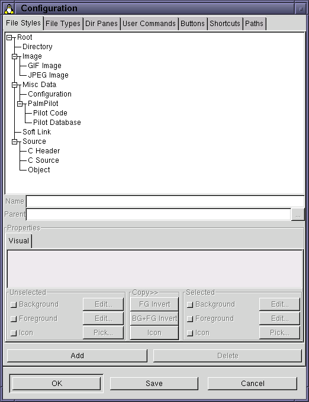

|
|
| LICENSE | NOTES | GUIDE | INTRO | USAGE | CONFIG | HISTORY | CONTRIBUTING | ACKS |
This section of the manual describes some general features about gentoo's configuration window.
When you wish to make changes to gentoo's configuration, you need to somehow execute the built-in command Configure. When this command is run, the configuration window is opened. With the default (built-in) configuration of gentoo, you can execute this command by either clicking the button labeled "Configure" in the top right corner of the button bank, or by selecting the menu item of the same name in the pop-up menu reached by right-clicking in a dir pane.
The configuration window has a very simple layout. It consists mainly of two parts: a big working area, which only contains a so called "notebook widget", and a strip of buttons along the bottom of the window. Here's a screenshot:

The notebook widget is a container; it holds other widgets. It divides its contents into pages, and always displays exactly one page at any particular moment. The things at the top (labeled "File Styles", "File Types" and so on) are known as tabs. Each page has a tab: click on a page's tab to cause it to be displayed.
Most configuration pages share some common features, to make them easier to use. A typical configuration page contains quite a lot of different widgets; it is easy to get confused about which widget to use (and when). In an attempt at reducing this confusion, most configuration pages make all widgets that are not immediately useful insensitive to user manipulation. Insensitive widgets are drawn in a distinct way, making them easy to spot. They also don't react to having the mouse pointer over them, like most other GTK+ widgets do. In the screenshot above, all widgets but two are insensitive.
The "Add" and "Delete" buttons that appear near the bottom of the page in the picture are very common in config pages. Not all pages use these two buttons, but those that do always place them in the exact same position, thus making them easy to spot.
The three buttons along the bottom ("OK", "Save" and "Cancel") are not part of the current page, but are always visible. All three close down the configuration window, with various side effects:
$HOME/~.gentoorc. For more information about the configuration file format,
read here.